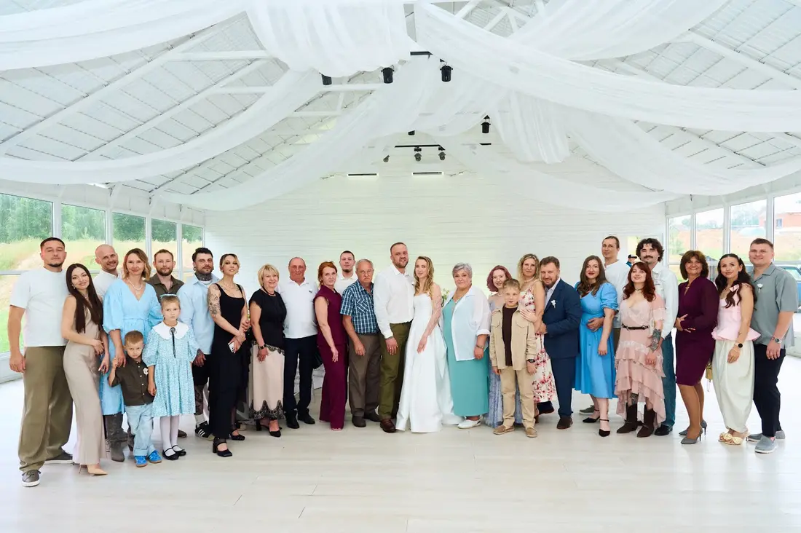

Шатёр даёт свободу: можно сыграть свадьбу на природе, у воды или в саду и при этом не зависеть от погоды. Но пустой шатёр — это технический тент. Залом его делает декор. Рассказываем, как оформить шатёр и что продумать заранее.
Потолок и стены
Главный приём — драпировка потолка: волны лёгкой белой ткани скрывают каркас и делают пространство мягким и светлым. Вдоль стен — ткань или зелень, а прозрачные стены оставляют вид на природу. Под тканью прячут свет и технические элементы.

Свет
В шатре нет «родного» света, поэтому его проектируют с нуля: подвесные гирлянды или люстры, подсветка драпировки, свечи на столах. Вечером именно свет превращает шатёр в зал. Нужна надёжная электрика и, если на площадке нет сети, — генератор.
Расстановка и флористика
Длинные столы подчёркивают протяжённость шатра, круглые — делают его камерным. Флористика на столах может быть простой и свежей: белые цветы, зелень, даже фрукты — на нашей свадьбе в шатре это были зелёные яблоки. Президиум ставят у торцевой стены, чтобы его было видно со всех мест.


Церемония рядом с шатром
Выездную регистрацию удобно провести рядом — например, у арки среди деревьев, — а потом пригласить гостей в шатёр на банкет. Так у свадьбы будет две сцены: природная и праздничная.

Что продумать заранее
- Погода: боковые стенки, отопление или кондиционер, пол.
- Электричество и свет.
- Время на монтаж: шатёр и декор ставят заранее, часто накануне.
- Туалеты, кухня для кейтеринга, парковка — если площадка «чистое поле».
Как заказать
Мы оформляем свадьбы в шатрах в Москве и Подмосковье — драпировка, свет, флористика, церемония. Посмотрите кейс «Белый шатёр и зелёные яблоки» и расскажите о площадке — посчитаем смету.
Частые вопросы
Можно ли сыграть свадьбу в шатре осенью?
Да, если у шатра есть стенки, пол и отопление. Летом наоборот важна вентиляция.
Сколько времени нужно на оформление шатра?
Шатёр и основной декор обычно монтируют заранее, часто накануне свадьбы, флористику — в день.
Как сделать шатёр уютным?
Драпировка потолка, тёплый свет, свечи и флористика превращают технический тент в зал.